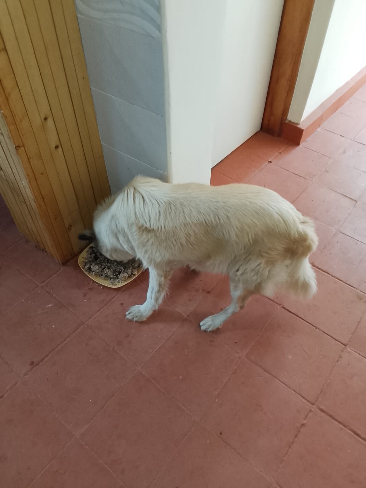

Mucheru World of Golf
Operations at Mucheru World of Golf on Saturday, 17th October 2026 maintained strong momentum across heavy machinery drainage works, manual trench grading, agronomic rootzone spreading, teebox contouring, and hydraulic dam liner sealing:
Major Infrastructure Milestone: Main Drainage Trench Excavation Completed
The Backhoe Loader has completed excavating the main collector drainage trenches across the playing corridors and past the perimeter boundary line. Excavated trench spoil has been spread and leveled along the perimeter fence road, establishing clear downstream runoff corridors for all greens' drainage networks.
- Main Collector Drainage Trench Excavation Completed: The Backhoe Loader completed all mechanical trench excavation along the primary collector corridor, including the extended section running past the estate perimeter fence. Machine operators and manual crews smoothed and leveled the excavated trench spoil neatly beside the access road to maintain clean surrounds.
- Trench Bed Gravitational Flow Leveling: Manual labor teams equipped with shovels and jembes worked inside the excavated collector trench and green drainage branches, clearing loose clods and grading the invert to guarantee an unobstructed gravitational water flow from the greens toward the main outlet.
- Manual Green Drainage Trenching Continues: Ground laborers continued hand-digging lateral drainage trenches connecting individual putting greens to the primary drainage network.
- Green 14 River Sand Application: Following the delivery of one tipper lorry of clean river sand on Wednesday, site laborers loaded wheelbarrows to transport and spread the sand evenly over the ballast foundation layer across Green 14, covering approximately 85% of the green surface.
- Delivery of PVC Pipes via Peter Githinji: A white delivery truck arrived on site carrying a new consignment of orange PVC drainage pipes arranged through Peter Githinji, supplying essential piping materials for ongoing lateral drainage installations.
- Teeboxes 6 & 8 Platform Grading Commenced: Ground crews commenced precision earthwork grading, leveling, and surface contour refining on the launch platforms of Teebox 6 and Teebox 8, working stockpiles of red soil on both flanks of the central drainage channel.
- Dam 2 Dewatering & Airtight Liner Sealing: Portable pumps continued evacuating residual water from Dam 2 to shallow depth. Specialized repair crews inside the basin cleaned sediment folds and used an electric hot-air heat gun and pressure roller to thermal-weld geomembrane patch strips, ensuring 100% airtight and watertight connections.
18-hole putting green status audit showing the latest work completed and current condition for each green as of October 17, 2026:
| Green | Current Technical & Agronomic State | Milestone Status |
|---|---|---|
| Green 1 | Pop-up sprinkler and irrigation perimeter trenches dug along marked chalk line (Oct 14). | Sprinkler Trenches Complete |
| Green 2 | Pop-up sprinkler and irrigation perimeter trenches dug along marked chalk line (Oct 14). | Sprinkler Trenches Complete |
| Green 3 | Pop-up sprinkler and irrigation perimeter trenches dug along marked chalk line (Oct 14). | Sprinkler Trenches Complete |
| Green 4 | Pop-up sprinkler and irrigation perimeter trenches dug along marked chalk line (Oct 14). | Sprinkler Trenches Complete |
| Green 5 | Ready. Fully established mature championship putting green turfgrass under active pop-up sprinkler irrigation conditioning. | Ready • Established Turf |
| Green 6 | Pop-up sprinkler trenches digging completed around green perimeter collar (Oct 15). | Sprinkler Trenches Complete |
| Green 7 | Drainage outlet trench connecting green 7 to main canal dug and leveled by manual crew (Oct 15). | Outlet Trench Dug • Leveled |
| Green 8 | Pop-up sprinkler trenches digging completed around green perimeter (Oct 15). | Sprinkler Trenches Complete |
| Green 9 | Orange drainage PVC pipe connected and outlet trench leveled leading to main canal (Oct 15). | PVC Connected • Trench Done |
| Green 10 | Pop-up sprinkler trenches digging completed around collar and surrounds (Oct 15). | Sprinkler Trenches Complete |
| Green 11 | Pop-up sprinkler trenches digging completed around green perimeter (Oct 15). | Sprinkler Trenches Complete |
| Green 12 | Pop-up sprinkler trenches digging completed around perimeter collar (Oct 15). | Sprinkler Trenches Complete |
| Green 13 | Pop-up sprinkler trenches digging completed along marked green perimeter (Oct 15). | Sprinkler Trenches Complete |
| Green 14 Today | River sand delivered on Wednesday applied and spread across the green foundation surface using wheelbarrows (Oct 17). | River Sand Spreading |
| Green 15 | Pop-up sprinkler trenches digging completed around outer collar surrounds (Oct 15). | Sprinkler Trenches Complete |
| Green 16 | Pop-up sprinkler trenches digging completed around green perimeter collar (Oct 15). | Sprinkler Trenches Complete |
| Green 17 | Pop-up sprinkler trenches digging completed around green perimeter (Oct 15). | Sprinkler Trenches Complete |
| Green 18 | Pop-up sprinkler trenches dug; riversand applied and leveled across green surface (Oct 14). | Riversand • Sprinkler Trench |
Comprehensive 18-hole championship teebox platform audit tracking earthwork leveling, structural embankments, and playing corridor alignments as of October 17, 2026:
| Teebox | Current Technical & Earthwork State | Platform Status |
|---|---|---|
| Tee 1 | Playing launch platform fully refined, contoured, and graded to final design elevation (Oct 14). | Refined & Graded |
| Tee 2 | Platform earthwork grading and surface refinement completely finished (Oct 15). | Refined & Graded |
| Tee 3 | Playing launch platform completely graded, leveled, and refined to final elevation (Oct 15). | Refined & Graded |
| Tee 4 | Championship launch platform completely graded, leveled, and refined to final elevation (Oct 15). | Refined & Graded |
| Tee 5 | Playing platform actively graded and refined with red soil next to 2nd main drainage trench (Oct 16). | Grading & Refining |
| Tee 6 Today | Playing platform grading and surface contour refining commenced by ground crew (Oct 17). | Grading & Refining |
| Tee 7 | Both number 7 teebox platforms actively reshaped, cut, and leveled by crew under Joe Kamau and supervisors (Oct 4). | Both Platforms Reshaped |
| Tee 8 Today | Championship launch platform surface grading and contour refining commenced (Oct 17). | Grading & Refining |
| Tee 9 | Playing launch platform grading and surface refinement actively continued by manual crew (Oct 16). | Refinement in Progress |
| Tee 10 | Playing launch platform shaping and surface refinement completely finished (Oct 13). | Platform Refined |
| Tee 11 | Playing launch platform grading and contour refinement completely finished (Oct 13). | Refinement Complete |
| Tee 12 | Both championship and forward platforms actively shaped, leveled, and refined to finished design elevation (Oct 8). | Shaped & Refined |
| Tee 13 | Playing platform earthworks completely finished, shaped, and refined to final design elevation and contours (Oct 7). | Finished & Refined |
| Tee 14 | Launch platform earthworks completely finished, shaped, and refined to final playing contour (Oct 7). | Finished & Refined |
| Tee 15 | Launch platform shaping completely finished; terrace cut to design elevation and precision leveled (Oct 6). | Platform Reshaped |
| Tee 16 | Surplus red soil moved onto platform; launch terrace completely reshaped and leveled (Oct 5). | Platform Reshaped |
| Tee 17 | Launch platform reshaped, cleared of brush, and graded to playing corridor alignment (Oct 6). | Platform Reshaped |
| Tee 18 | Championship launch platform surface grading, red soil leveling, and refinement underway (Oct 16). | Grading & Refining |
Operations Agronomy & Engineering Synthesis
Putting Greens & Drainage Milestones: The Backhoe Loader completed excavating all primary collector drainage trenches across fairways and past the perimeter line, with spoil leveled along the access road; Green 14 river sand application is actively underway with 1 lorry load distributed over ~85% of foundation surface; Dam 2 liner airtight welding is advancing steadily with electric heat guns and pressure rollers; manual trench grading continues.
Championship Teebox Platforms: Teeboxes 6 and 8 commenced active platform grading and contour refinement today; Teeboxes 1, 2, 3, 4, 5, 7, 9, 10, 11, 12, 13, 14, 15, 16, 17, and 18 maintain established design grades.
Field drone and ground video documentation capturing Saturday, 17th October 2026 progress across Mucheru World of Golf, showing the completed main collector drainage trenches with flowing water, spoil leveling along the perimeter fence corridor, river sand application across Green 14, Dam 2 geomembrane liner airtight welding, and teebox shaping.
Sequential photographic evidence documenting main drainage excavation completion, spoil leveling, Green 14 river sand application, PVC pipe delivery, teebox grading, and Dam 2 liner repair at Mucheru World of Golf:

Aerial Panoramic Overview of Golf Course
High-altitude drone capture showing the full course layout, putting greens with red soil surrounds, the water hazard corridor, and excavated drainage canals.

Aerial View: River Sand Spreading on Green 14
Overhead capture of Green 14 showing delivered river sand being unloaded and spread over the ballast sub-base layer, covering approximately 85% of the surface.

Wheelbarrow Distribution of River Sand on Green 14
Ground labor crew loading clean river sand into wheelbarrows and applying uniform layers across the prepared ballast sub-base foundation.

Labor Team Shoveling River Sand Stockpile
Field workers shoveling delivered river sand into wheelbarrows at Green 14 apron, preparing sand rootzone material for full surface leveling.

Dam 2 Dewatered Basin & Liner Repair Crew
Drone perspective of Dam 2 dewatered floor showing workers in gumboots clearing residual silt and preparing geomembrane seams for thermal patch sealing.

Dam 2 Geomembrane Floor Seam Inspection
Overhead view of Dam 2 floor folds where overlapping polythene liner panels are cleared of moisture and sediment prior to airtight hot-air welding.

Hot-Air Thermal Welding on Dam 2 Liner
Repair team operating an electric hot-air welding gun and handheld pressure roller to fuse overlapping polythene liner seams and patch strips for watertight sealing.

Repair Crew Working Along Central Dam 2 Floor Line
Wide basin perspective showing field workers aligned along the central seam line systematically inspecting and sealing geomembrane liner joints.

Delivery of Drainage PVC Pipes via Peter Githinji
White Isuzu commercial truck delivering a new consignment of orange PVC drainage pipes to the fairway access corridor alongside the Backhoe Loader.

Manual Excavation of Green Drainage Feeder Trench
Laborer hand-digging a lateral drainage trench with a pickaxe and jembe alongside excavated spoil heaps, with the Backhoe Loader visible in the background.

Aerial View: Teeboxes 6 & 8 Grading Around Canal
Overhead drone view showing Teebox 6 and Teebox 8 launch platforms on opposite flanks of the water-carrying main drainage trench with red soil heaps being contoured.

Labor Crew Grading Teebox Launch Platform
Ground labor team actively leveling, raking, and contouring red soil across the teebox terrace directly adjacent to the water drainage canal.

Platform Surface Refinement on Championship Teebox
Workers spreading red loam soil from a wheelbarrow to achieve uniform grade and playing corridor alignment across the teebox surface.

Aerial View: Water Flowing in Leveled Main Collector Trench
High-angle drone view of the central drainage canal showing steady water flow with workers inside the trench checking bed levels for positive gravitational drainage.

Manual Bed Leveling Along Main Collector Canal
Workers wading in the channel bed removing soil obstructions, clearing sidewalls, and deepening low spots to maintain steady gravitational runoff flow.

Steady Gravitational Discharge Along Main Trench
Straight perspective down the excavated collector canal showing smooth water conveyance toward the primary downstream discharge point.

Aerial View: Main Trench Excavated & Spoil Leveled
Overhead view of the completed main trench running parallel to the perimeter boundary road with excavated spoil evenly spread and leveled alongside.

Excavated Trench Soil Leveled Beside Canal
Ground perspective showing excavated trench spoil smoothed out and leveled along the perimeter fence corridor to preserve neat fairway borders.

Continuous Leveled Spoil Corridor Along Fence Line
View down the fence corridor showing uniform spreading and leveling of excavated trench earth adjacent to the newly dug collector channel.

Main Collector Trench Extending Past Perimeter
Trench alignment running alongside the estate perimeter fence and planted palm trees, directing stormwater runoff cleanly past property boundaries.

Backhoe Loader Finishing Trench Along Perimeter Road
Yellow Backhoe Loader stationed along the estate perimeter road completing the mechanical excavation of the drainage trench extension.
Chaka Farms
Operations across Chaka Farms on Saturday, 17th October 2026 maintained rigorous dairy volume accounting, advanced canine grooming and behavioral drills, and preserved immaculate compound grounds:
Farm Operational Highlights
Dairy production achieved 7.0 Litres gross harvest, with 6.0 Litres sold commercially and 1.0 Litre distributed for routine farm allocations, fully reconciled strictly in Litres. Willy oversaw comprehensive canine care including full dog bathing, coat grooming, paw command obedience practice, off-leash exercise walking, and kennel manners. Margaret and Monica maintained pristine compound cleanliness.
- 100% Reconciled Dairy Harvest (7.0 Litres): Kamandau logged 7.0 Litres gross milk yield across daily milking (4.5L morning session + 2.5L evening session). Commercial dispatches totaled 6.0 Litres (3.5L morning + 2.5L evening). Routine internal farm allocations accounted for 1.0 Litre (0.5L Gladys staff ration + 0.5L Maasai), ensuring 100% quantitative accounting reconciliation strictly in Litres with zero discrepancy.
- Canine Unit Bathing & Grooming: Willy conducted a thorough canine hygiene session, giving the Swiss Shepherds fresh water baths using dedicated washing tubs, cleaning their coats, and grooming them thoroughly to maintain optimal canine coat health and cleanliness.
- Obedience Commands & Off-Leash Walking: Willy reinforced behavioral training through structured "paw" command drills, followed by an afternoon off-leash exercise walk across the farm paddocks to foster physical fitness and pack socialization.
- Kennel Sanitation & Manners: Detailed cleaning and sanitization of all kennel stalls were completed, accompanied by manners training to reinforce calm, obedient behavior during feeding and stall routines.
- General Compound Cleanliness & Maintenance: Margaret and Monica carried out comprehensive estate grounds maintenance, sweeping paved walkways, clearing fallen foliage, and ensuring immaculate presentation throughout the compound.
Official quantitative dairy milking harvest and sales ledger for Saturday, 17th October 2026, recording gross yields, commercial dispatches, and internal farm disbursements strictly in Litres:
| Category / Transaction | Morning Session | Evening Session | Daily Total |
|---|---|---|---|
| Gross Milk Harvested | 4.5 Litres | 2.5 Litres | 7.0 Litres |
| Commercial Milk Sales (Dispatched) | 3.5 Litres | 2.5 Litres | 6.0 Litres |
| Internal Farm Allocation — Gladys (Staff) | 0.5 Litres | — | 0.5 Litres |
| Internal Farm Allocation — Maasai | 0.5 Litres | — | 0.5 Litres |
| Internal Farm Allocation — Goat Kids (Weaned) | 0.0 Litres | 0.0 Litres | 0.0 Litres |
| Total Volume Accounted For | 4.5 Litres | 2.5 Litres | 7.0 Litres (100% Reconciled) |
Dairy Accounting & Canine Husbandry Note
Total gross milk harvested of 7.0 Litres is fully accounted for by 6.0 Litres sold commercially and 1.0 Litre in routine farm allocations (0.5L Gladys + 0.5L Maasai). All milk figures are recorded strictly in Litres. In the canine section, dog bathing, grooming, paw command practice, off-leash walking, and kennel manners were conducted under Willy.
Field video recording documenting the Chaka Farms canine unit kennel manners training session overseen by Willy, highlighting obedience commands, structured stall manners, and calm canine behavior on Saturday, 17th October 2026.
Photographic field evidence documenting canine unit stall sanitation, bathing, and coat grooming at Chaka Farms:

Bathed Swiss Shepherd at Stall Entrance
Swiss Shepherd standing outside the kennel stall door following a fresh water bath and coat grooming, with clean stall visible in the background.

Sanitized Stall Run & Clean Water Dishes
Dog stepping out from a freshly washed stall with clean metal and plastic water bowls, demonstrating calm obedience after grooming.

Overhead Perspective Inside Kennel Stall
Top-down view of the clean Swiss Shepherd standing inside the sanitized stall run with scrubbed concrete floors and fresh water dishes.

Exterior Wash Station with Bathing Basin
Washing station showing a large orange bathing tub filled with water on the concrete apron, with freshly washed dog outside the Coby and Bella stalls.

Calm Canine Demeanor in Sanitized Enclosure
Swiss Shepherd displaying calm kennel manners inside the washed enclosure after grooming and bathing routines under Willy's care.
Kabete Residence
Field operations at Kabete Residence on Saturday, 17th October 2026 advanced structural falsework assembly, masonry concrete curing, elevated roof drainage maintenance, and domestic pet welfare:
Structural Engineering & Estate Upkeep Highlights
Carpenters erected and reinforced timber falsework props, joists, and marine board beam sides for the shutter slab formwork base across the fireplace pit and building structure. Continuous water curing was applied across the concrete forest retaining wall at the river area. Maintenance crews cleared dry leaves from main house gutters and the pergola rooftop using a motorized backpack blower, while domestic pets received attentive care.
- Main House Roof Gutter Cleaning: Maintenance personnel utilized ladders to access the roof eaves of the main house, thoroughly clearing accumulated fallen leaves, dry pine needles, and silt from the white rainwater gutters into collection buckets to ensure unobstructed rainwater drainage.
- Pergola Rooftop Clearance with Backpack Leaf Blower: Grounds workers accessed the flat roof of the outdoor pergola above the terrace lounge, sweeping dry leaf debris with brooms and operating a motorized backpack leaf blower to thoroughly clear heavy foliage accumulations.
- Setting Up & Reinforcing Shutter Slab Formwork Base: Structural carpenters erected timber bearers, joists, and marine plywood beam sides for the shutter slab formwork base over the stone masonry structure. Dense vertical timber props resting on sole plates were aligned with diagonal cross bracing to ensure rigid structural reinforcement for future concrete placement.
- Shutter Formwork Base Slab at the Fireplace: Carpenters in high-visibility vests constructed and leveled timber formwork framing, joists, and marine board sides across the deep substructure pit at the outdoor fireplace, securing alignments with line levels.
- Continuous Water Curing on Forest River Retaining Wall: Masons and maintenance personnel applied continuous water curing across the reinforced concrete retaining wall along the forest river slope using a hosepipe and buckets, maintaining vital moisture for optimal concrete strength development.
- Domestic Pet Nutrition & Care: Fresh nutritious meals were prepared in stainless steel bowls for resident cats (Reo, Mocha, and Aiko) and on a feeding dish for Ajabu the Golden Retriever, with attentive care provided on site.
Sequential photographic field documentation capturing gutter cleaning, pergola roof clearing, shutter formwork assembly and propping, forest retaining wall curing, and domestic pet care at Kabete Residence:

Main House Eaves Gutter Clearance
Maintenance worker on an extension ladder clearing accumulated tree leaves and organic debris from the white roof gutter along the main house eaves into a bucket.

Pergola Flat Rooftop Sweeping
Groundsman on the elevated flat roof of the outdoor pergola sweeping large mounds of dry fallen eucalyptus leaves across the terrace structure.

Backpack Leaf Blower Clearance on Pergola Roof
Worker operating a motorized backpack leaf blower atop the pergola frame, efficiently clearing dried foliage and leaf litter from above the outdoor lounge.

Retaining Wall Water Curing at River Area
Continuous water curing applied along the concrete retaining wall on the forest river slope using a delivery hose and bucket to ensure proper hydration.

Setting Up Shutter Slab Formwork Base
Elevated perspective showing timber runners, joists, and marine plywood beam sides systematically assembled across stone masonry walls for the shutter slab base.

Formwork Height Alignment & Bearer Setting
Carpenter using a measuring tape to align overhead timber joists and marine board beam formwork between the stone substructure walls.

Shutter Formwork Assembly at Fireplace Pit
Carpenters in high-visibility vests securing timber joists and marine plywood shutters across the deep substructure pit at the outdoor fireplace.

Reinforcing Shutter Slab Base with Timber Props
Worker installing vertical timber props with sole plates and diagonal cross bracing beneath the falsework to provide rigid load support.

Dense Timber Propping Framework
Dense framework of vertical timber propping posts securely wedged beneath the shutter slab falsework within the stone structure.

Nutritious Meals Prepared for Resident Pets
Three stainless steel bowls with prepared meals for resident cats (Reo, Mocha, Aiko) alongside a feeding dish prepared for Ajabu the dog.

Ajabu the Golden Retriever Feeding
Ajabu enjoying his freshly prepared dinner inside the residence, under attentive domestic pet care routines.
.jpeg)
Resident Cats Evening Dinner Routine
Two of the resident cats feeding calmly from their dedicated stainless steel dishes on the tiled floor inside Kabete Residence.
Honi Properties
Operations across Honi Properties on Saturday, 17th October 2026 focused on restoring perimeter boundary security and receiving structural stabilization materials dispatched from Chaka Farms:
Property Protection & Structural Stabilization Milestone
Under the supervision of Mr. Gichuhi, site workers actively repaired the Honi perimeter fence line, erecting treated wooden posts, fastening lower wire mesh netting, and running tensioned barbed wire along the top. In addition, dedicated materials dispatched from Chaka Farms arrived on site to provide structural bracing for the unstable hillside building.
- Perimeter Boundary Fence Line Repair: Mr. Gichuhi supervised the active reconstruction and repair of the property boundary fence at Honi. Work crews cleared vegetation along the fence corridor, dug post holes, firmly installed new treated wooden fence posts into the ground, and strung tensioned barbed wire along the top tier.
- Wire Mesh Netting Installation: Ground laborers unrolled and fastened hexagonal wire mesh netting along the lower tier of the fence line, securing it tightly to the wooden posts to create a solid physical barrier that protects property boundaries.
- Delivery of Fence Repair & Structural Materials: A dedicated consignment of construction materials was dispatched and delivered from Chaka Farms to Honi. This included replacement timber fence posts, rolls of wire, and timber structural members.
- Structural Bracing for Unstable Building: The delivered timber materials are specifically designated for structural reinforcement works to firmly brace and hold the elevated hillside stilt cabin at Honi, addressing timber post tilt and preventing structural imbalance.
Photographic field evidence documenting perimeter boundary fence repairs, post installation, and wire netting at Honi Properties:

New Treated Fence Post & Wire Mesh at Honi
Newly installed treated wooden fence post firmly set in the ground, with tensioned wire mesh netting and barbed wire strung along the property boundary line.

Wide Boundary Fence Line Corridor Restoration
Corridor view of the cleared perimeter fence line at Honi showing erected wooden posts, wire tensioning, and field worker actively securing the boundary.

Continuous Restored Perimeter Fence Line
Perspective along the restored boundary fence showing new wooden posts, lower wire mesh netting, and top barbed wire run to secure the estate perimeter.